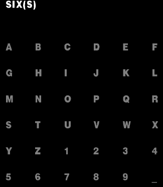
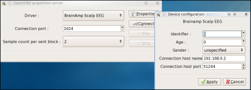
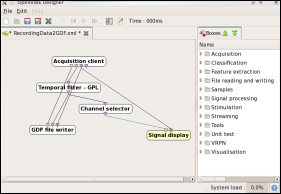
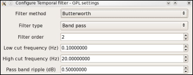
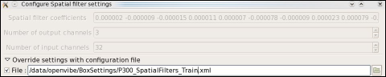
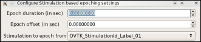
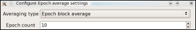
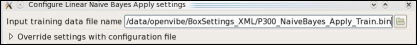
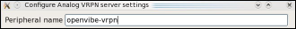

- Software Home
- Forum
- INRIA gForge
- Mailing Lists
- Bug Tracker
- Research Project
- IRC : #openvibe on irc.freenode.net
- Project Leader : Anatole Lécuyer, Inria (anatole dot lecuyer at inria dot fr)
- Lead Software Engineer : Laurent Bonnet, Inria (laurent dot bonnet at inria dot fr)
- This documentation is licenced under CC-BY-SA

NOTE: this demo application has been removed of the supported release because of the problems users encountered reproducing the setup. The sources can still be found from the svn repository at the following URL :
svn co svn://scm.gforge.inria.fr/svn/openvibe/deprecated-branches/openvibe-applications-p300-speller-wip-ggibert
In case of problem, please contact the original authors.
Meanwhile, the p300-speller and p300-speller-xDAWN scenarios included in the share/openvibe-scenarios/bci can be used for the same purpose.
Principle :
The user focuses attention on one of the 36 character cells of a 6 x 6 matrix while each row and column of the matrix is intensified in a random sequence. The row and column intensifications that intersect at the attended cell represent the target stimuli, which occur with a probability of 1/6. The rare presentation of the target stimuli in the random sequence of stimuli constitutes an Oddball Paradigm and will elicit a P300 response to the target stimuli. With proper P300 feature selection and classification, the attended character of the matrix can be identified and communicated.
Protocol :
1st step: Training phase
Stimulation
- 6 x 6 matrix of letters (a-z), numbers (1-9) and symbol ( _ )
- Off-line mode, i.e. the subject was instructed to focus his attention on the current target symbol (which was displayed in between brackets next to the target word) and to count the number of times this symbol was intensified. Stimulation matrix for the word SIX with current target S
- P300 Speller Stimulator settings :
- Background color: Black (RGB: 0 0 0)
- Letter color: grey (RGB: 0.5 0.5 0.5)
- Intensification letter color : white (RGB: 1 1 1)
- Enhancement letter : + 5 pts
- Number lines: 6, Number columns: 6
- Flash duration: 80 ms
- ISI (Inter Stimulus Interval): 150 ms
- Number flash by item: 10
- Target stimuli: ex: 6V89FCPK47G2QNHE3UY51ZSOA...
Data acquisition
- Acquisition EEG activity was recorded continuously from 32 active electrodes (actiCap, Brain Products GmbH, Munich), referenced to the nose and grounded to the forehead.
- EEG signals were band pass filtered between 0.1-150 Hz, amplified and digitized at a rate of 100 Hz
OpenViBE Scenario
- Configuration of Acquisition server
- Select the BrainAmp Scalp EEG driver 
- Select 2 samples count per send block (in case of an acquisition at 100 Hz)
- Configure, in Properties, the Connection host name of the BrainAmp Computer
- Select the BrainAmp Scalp EEG driver
- Select and open the scenario entitled
RecordingData2GDF.xml - It is composed of :
- Acquisition client Box: open a socket to read experiment information, signal, stimulations and channel localization data sent across the network.
- Temporal filter Box: digitally filter EEG signal with a band-pass filter (Butterworth filter, 0.1-20 Hz, slope 24 dB/octave) 
- GDF file writer: dump on disk the filtered EEG data in the standard GDF file format during the Training phase
2st step: Learning phase (MATLAB procedure)
After the training phase of 50 letters, the EEG data were saving in GDF format and an offline analysis was done in MATLAB to estimate the settings of a Spatial Filter box and a Classifier box using in the online phase.
The recorded EEG signals contain P300 potentials as well as other brain activities, muscular and/or ocular artifacts leading to a very low signal-to-noise ratio (SNR) of P300 potential. An unsupervised algorithm is proposed to enhance P300 evoked potentials by estimating spatial filters [Rivet 2009].
Among the proposed classifiers for BCIs, Naïve Bayesian classifier is chosen.
As already noticed by Rivet, only a few number of spatial filters is necessary to improve the classification accuracy. Then, to estimate the best training of the spatial filters and the Naive Bayes classifier, a leave-one-out strategy for cross-validation for each using of 1, 2, 3, 4 or 5 spatial filters is estimated by the following MATLAB function (toolbox BIOSIG required) located in /openvibe/matlab/OV_P300 :
with WordTrain is the word (or non-word) of 50 letters and TrainGDF the GDF file containing EEG and stimulations data recorded during training phase.
This function computes also the Spatial Filter and Classifier parameters for different numbers of repetitions (3, 5, 8 or 10 repetitions) and have been saved in the /openvibe/BoxSettings_XML folder.
Finally, the Spatial Filter settings are stored respectably for 10, 8, 5 and 3 repetitions in the following files:
/openvibe/BoxSettings_XML/P300_SpatialFilters_*_10Rep.xml/openvibe/BoxSettings_XML/P300_SpatialFilters_*_8Rep.xml/openvibe/BoxSettings_XML/P300_SpatialFilters_*_5Rep.xml/openvibe/BoxSettings_XML/P300_SpatialFilters_*_3Rep.xml
And the Naïve Bayes classifier settings are stored respectably for 10, 8, 5 and 3 repetitions in the following files:
/openvibe/BoxSettings_XML/P300_NaiveBayes_Apply_*_10Rep.bin/openvibe/BoxSettings_XML/P300_NaiveBayes_Apply_*_8Rep.bin/openvibe/BoxSettings_XML/P300_NaiveBayes_Apply_*_5Rep.bin/openvibe/BoxSettings_XML/P300_NaiveBayes_Apply_*_3Rep.bin
3rd step: OnLine phase
Stimulation
- 6 x 6 matrix of letters (a-z), numbers (1-9) and symbol (_ )
- On-line mode, i.e. the subject was instructed to focus his attention on the desired symbol and to count the number of times this symbol was intensified.
- After all flashes were presented, the stimulator presents the symbol selected by the OpenViBE P300 Speller scenario via a VRPN protocol.
- P300 Speller Stimulator settings:
- Mode: online
- Background color: Black (RGB: 0 0 0)
- Letter color: grey (RGB: 0.5 0.5 0.5)
- Intensification letter color : white (RGB: 1 1 1)
- Enhancement letter : + 5 pts
- Number lines: 6, Number columns: 6
- Flash duration: 80 ms
- ISI (Inter Stimulus Interval): 150 ms
- Number flash by item: 10
- VRPN peripheral name: openvibe-vrpn-machine.
Data Acquisition:
- Identical to the Learning phase
OpenViBE scenario:
- Configuration of Acquisition server : Identical to the Learning phase
- Select and open the scenario entitled
P300_OnLine_SF_NB_10rep.xml
- It is composed of:
- Acquisition client Box: identical to the learning phase settings
- Channel selector Box: restrict outgoing signal data to a subset data based on a list of channels, ie select only the 32 EEG channels in a case for which there are supplementary channels such as EOG.
- Temporal Filter Box: digitally filter EEG signal with a band-pass filter (Butterworth filter, 0.1-20 Hz, slope 24 dB/octave)
- Spatial Filter Box: apply a matrix which represents the spatial pattern determined by a method for producing enhanced EEG information related to a selected brain activity. In this scenario, the matrix was computed by the previous step (2nd step: Matlab procedure) and stored in the XML file
P300_SpatialFilters_*_*Rep.xml. - Stimulation based epoching Box: generates epochs upon reception of a given stimulation. In this scenario, the Epoch duration is equal to 600 ms without epoch offset. Moreover, 6 epoching boxes for stimulation sent when a row was intensified are used with Stimulation Label named at
OVTK_StimulationId_Label_01to andOVTK_StimulationId_Label_06. For the columns, 6 other epoching boxes with Stimulation Label named atOVTK_StimulationId_Label_07to andOVTK_StimulationId_Label_0C(OVTK_StimulationId_Label_0A,OVTK_StimulationId_Label_0B,OVTK_StimulationId_Label_0Ccorrespond respectively toLabel_10,Label_11andLabel_12). - Epoch average Box: average a number of epochs fixed in Epoch count setting. In the P300 Speller scenario, the Epoch count corresponds to the number of repetitions fixed in settings file of the P300 speller stimulator, in this case, 10 repetitions. 
- Linear Naïve Bayes Apply Box: process a Linear Naïve Bayes analysis on time samples of averaged signals computed by Epoch average Box. One box is used to detect which is the intensified row that evokes a P300 response and another box for the column. Each box has 6 inputs connected to the output of the 6 Epoch average boxes. This box contains a Linear Naïve Bayes apply algorithms for each input. The Linear Naïve Bayes classifier settings were computed by the previous step (2nd step: Matlab procedure) and stored in the BIN file
P300_NaiveBayes_Apply_*_*Rep.bin. - Analog VRPN Sever Box: creates VRPN analog servers to send data to VRPN client application configured in the P300 Speller Stimulator. It has 2 inputs; one was connected to the Linear Naïve Bayes Box output for the rows and the other one for the columns. The peripheral name is the same chosen in the P300 Speller Stimulator settings.
References
Rivet, B.; Souloumiac, A.; Attina, V. & Gibert, G. xDAWN Algorithm to Enhance Evoked Potentials: Application to Brain Computer Interface IEEE Transactions on, 2009, 1-1